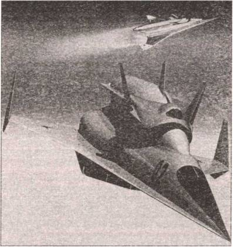

Таинственная «Спираль»
Охоту за спутниками предполагалось осуществлять также с помощью космического самолета «Спираль», разработка которого началась в 1965 году. Скажем несколько слов и о нем.
РЕКОРДЫ АМЕРИКАНЦЕВ. Уже вскоре после начала первых космических полетов конструкторы начали понимать, что полеты в космос на одноразовых ракетах весьма дороги и не очень надежны. «Вот если бы можно было в космос взлететь с обычного аэродрома!» — мечтали они.
Для осуществления этой мечты было сделано немало по обе стороны океана. В США, в частности, была осуществлена целая программа постройки и испытаний экспериментальных ракетопланов, которые сбрасывались с самолетов-носителей Б-29 или Б-52 и, включив затем собственные двигатели, развивали гиперзвуковые скорости и ставили рекорды высоты.
Так, например, в ряде полетов, совершенных на самолете Х-15 в начале 60-х годов, был поставлен ряд рекордов, которые впечатляют и поныне. Скажем, в сентябре 1961 года самолет развил скорость 5832 / , а 22 августа 1963 года достиг высоты 107 906 м!
В дальнейшем предполагалось, что подобные самолеты смогут выходить и на орбиту.
НАШ ОТВЕТ США. Узнав о достижениях американцев, наши конструкторы тоже принялись за освоение подобных рубежей. В середине 60-х годов ОКБ-155 Артема Микояна получает задание правительства возглавить работы по орбитальным и гиперзвуковым самолетам, а точнее — по созданию двухступенчатой авиационно-космической системы «Спираль». Главным конструктором этой системы стал Глеб Евгеньевич Лозино-Лозинский.
Перебрав несколько вариантов, конструктор и его коллега в конце концов пришли к такому решению. Система «Спираль» должна состоять из 52-тонного гиперзвукового самолета-разгонщика, получившего индекс «50–50», и расположенного на нем 8,8-тонного пилотируемого орбитального самолета (индекс «50») с 54-тонным двухступенчатым ракетным ускорителем.
Самолет разгонял «Спираль» до гиперзвуковой скорости 1800 м/сек (М-6). Затем на высоте 28–30 км происходило разделение ступеней. Разгонщик возвращался на аэродром, а орбитальный самолет с помощью ракетного ускорителя, работающего на фтороводородном (F +H ) топливе, должен был выйти на орбиту.
Конструкции и той и другой машины были разработаны достаточно подробно.
Так, экипаж самолета-разгонщика размещался в двухместной герметичной кабине с катапультными креслами. Собственно орбитальный самолет вместе с ракетным ускорителем крепился сверху в специальном ложе, причем носовая и хвостовая части закрывались обтекателями.
В качестве топлива разгонщик использовал сжиженный водород, который подавался в блок из четырех турбореактивных двигателей АЛ-51 разработки Архипа Люльки, имеющих общий воздухозаборник и работающих на единое сопло внешнего расширения. Особенностью двигателей являлось использование водорода для привода турбины. Вторым принципиальным новшеством был интегрированный регулируемый воздухозаборник, использующий для сжатия поступающего в турбины воздуха практически всю переднюю часть нижней поверхности крыла. Расчетная дальность полета самолета-разгонщика с нагрузкой составляла 750 км, а при полете в качестве разведчика — более 7000 км.
Боевой многоразовый пилотируемый одноместный орбитальный самолет длиной 8 м, с размахом крыла 7,4 м (в развернутом положении) выполнялся по схеме «несущий корпус». Консоли крыла при прохождении участка плазмообразования (выведение на орбиту и начальная фаза спуска) отклонялись вверх для исключения прямого обтекания их тепловым потоком. На атмосферном участке спуска орбитальный самолет раскрывал крылья и переходил в горизонтальный полет.
Двигатели орбитального маневрирования и два аварийных ЖРД работали на высококипящем топливе АТ-НДМГ (азотный тетраксид и несимметричный диметилгидразин), аналогичном применяемому на баллистических ракетах. Впрочем, в дальнейшем планировалось заменить эту гремучую смесь на более экологичное топливо. Запасов его хватало на орбитальный полет продолжительностью до двух суток, но основная задача орбитального самолета должна была выполняться в течение первых 2–3 витков. Боевая нагрузка составляла 500 кг для варианта разведчика и перехватчика и 2 т — для космического бомбардировщика. Фотоаппаратура или ракеты располагались в отсеке за отделяемой кабиной-капсулой пилота, обеспечивающей спасение пилота на любых стадиях полета. Приземление совершалось с использованием турбореактивного двигателя на грунтовой аэродром со скоростью 250 / .
Для защиты аппарата от нагрева при торможении в атмосфере предусматривался теплозащитный металлический экран, выполненный из множества пластин жаропрочной стали и ниобиевых сплавов, расположенных по принципу «рыбной чешуи». Экран подвешивался на керамических подшипниках, выполнявших роль тепловых барьеров, и при колебаниях температуры нагрева автоматически изменял свою форму, сохраняя стабильность положения относительно корпуса. Таким образом, на всех режимах конструкторы надеялись обеспечить постоянство аэродинамической конфигурации.
К орбитальному самолету пристыковывался одноразовый двухступенчатый блок выведения, на первой ступени которого стояли четыре ЖРД тягой 25 т, а на второй — один. В качестве топлива на первое время планировалось использовать жидкие кислород и водород, а впоследствии перейти на фтор и водород. Ступени ускорителя по мере вывода самолета на орбиту последовательно отделялись.

Так должна была выглядеть «Спираль» в полете.
Планом работы над проектом предусматривалось создание к 1968 году аналога орбитального самолета с высотой полета 120 км и скоростью М=6–8, сбрасываемого со стратегического бомбардировщика Ту-95, своеобразного ответа американской рекордной системе: В-52 + Х-15. К 1969 году планировалось создать экспериментальный пилотируемый орбитальный самолет (ЭПОС), имеющий полное сходство с боевым орбитальным самолетом, который выводился бы на орбиту ракетой-носителем «Союз». В 1970 году должен был начать летать и собственно разгонщик — сначала на керосине, а спустя два года и на водороде. Полностью готовая система должна была стартовать в космос в 1973 году. Из всей этой грандиозной программы в начале 70-х удалось построить всего три ЭПОСа — для исследования полета на дозвуковой скорости, для сверхзвуковых исследований и для выхода на гиперзвук. Но в воздух суждено было подняться только первому образцу в мае 1976 года, когда в США все аналогичные программы были уже свернуты. Совершив чуть более десятка вылетов, в сентябре 1978 года после неудачного приземления ЭПОС получил небольшие повреждения и больше в воздух не поднимался. Так что до полетов на «Спирали» космонавтов дело так и не дошло.
Впрочем, затраченный труд не пропал даром. Приобретенный опыт работы над «Спиралью» значительно облегчил и ускорил строительство многоразового космического корабля «Буран». Используя полученный опыт, Г. Е. Лозино-Лозинский возглавил создание планера «Буран». Игорь Волк, выполнявший подлеты на дозвуковом аналоге ЭПОСа, впоследствии первым поднял атмосферный аналог «Бурана» в воздух и стал командиром отряда летчиков-испытателей по программе «Буран». Пригодились и уменьшенные копии ЭПОСа — беспилотные орбитальные ракетопланы (БОР). На них испытывались различные варианты теплозащитного покрытия, выверялись наилучшие траектории входа в атмосферу с орбиты при возвращении «челноков» из полета.
Но подробный разговор о «Шаттлах» у нас еще впереди.